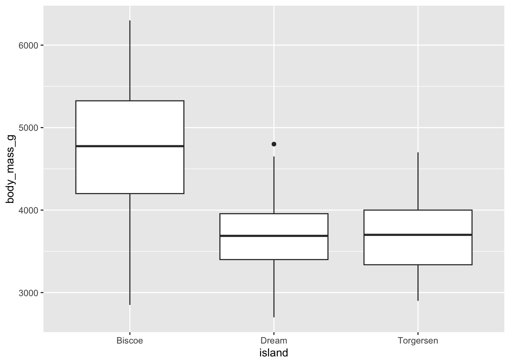
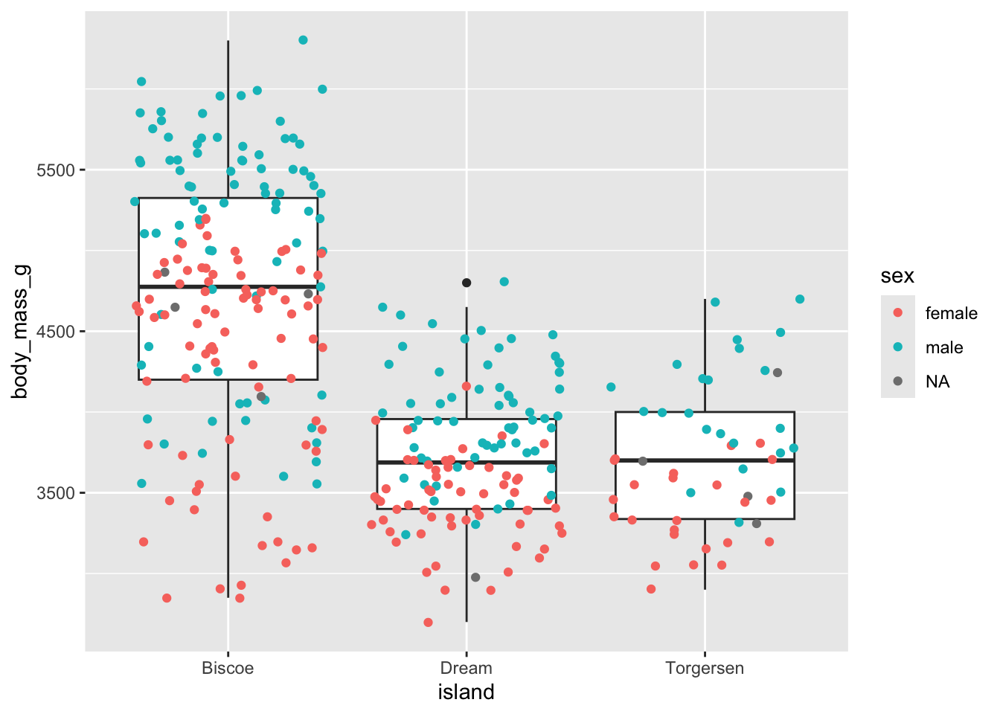
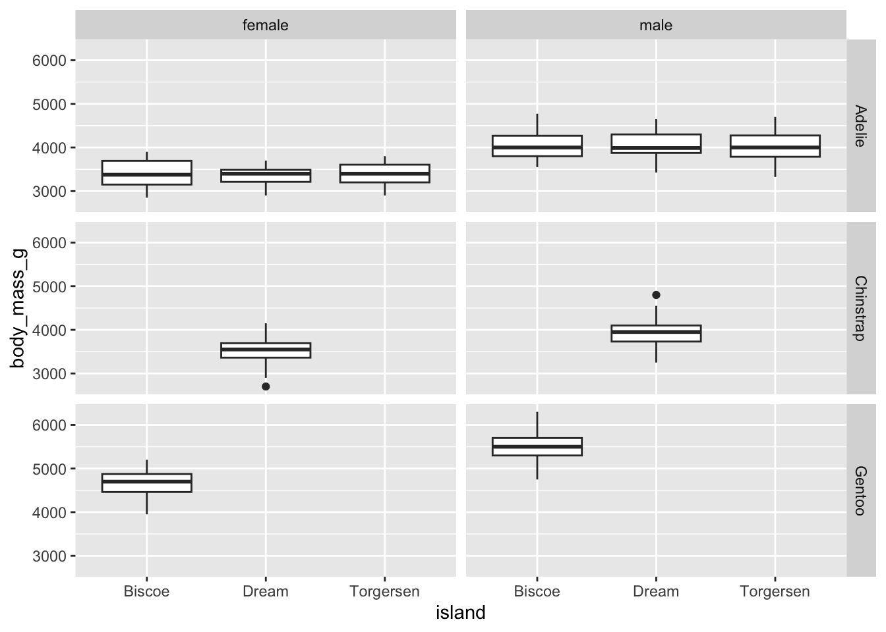

Introduction to ggplot2 - 03
More geoms, faceting plots, and adding labels
ggplot2
dataviz
plotting
tidyverse
1 Introduction
We have spent the last two Code Club sessions talking about plotting with ggplot2. We have gone through:
This week, we will go over:
- Additional geoms
- Creating a faceted plot
- Adding labels
1.1 Loading packages and data
The first thing we will do is load the tidyverse so we can use the functions it contains.
library(tidyverse)── Attaching core tidyverse packages ──────────────────────── tidyverse 2.0.0 ──
✔ dplyr 1.1.4 ✔ readr 2.1.5
✔ forcats 1.0.0 ✔ stringr 1.5.1
✔ ggplot2 3.5.1 ✔ tibble 3.2.1
✔ lubridate 1.9.4 ✔ tidyr 1.3.1
✔ purrr 1.0.2
── Conflicts ────────────────────────────────────────── tidyverse_conflicts() ──
✖ dplyr::filter() masks stats::filter()
✖ dplyr::lag() masks stats::lag()
ℹ Use the conflicted package (<http://conflicted.r-lib.org/>) to force all conflicts to become errorsWe are going to continue to use the penguins dataset we’ve been working with for the last couple of weeks. Let’s load that data so we can use it.
library(palmerpenguins)We can also take a “glimpse” at our data with the function glimpse() to remind ourselves of what data is contained within penguins.
glimpse(penguins)Rows: 344
Columns: 8
$ species <fct> Adelie, Adelie, Adelie, Adelie, Adelie, Adelie, Adel…
$ island <fct> Torgersen, Torgersen, Torgersen, Torgersen, Torgerse…
$ bill_length_mm <dbl> 39.1, 39.5, 40.3, NA, 36.7, 39.3, 38.9, 39.2, 34.1, …
$ bill_depth_mm <dbl> 18.7, 17.4, 18.0, NA, 19.3, 20.6, 17.8, 19.6, 18.1, …
$ flipper_length_mm <int> 181, 186, 195, NA, 193, 190, 181, 195, 193, 190, 186…
$ body_mass_g <int> 3750, 3800, 3250, NA, 3450, 3650, 3625, 4675, 3475, …
$ sex <fct> male, female, female, NA, female, male, female, male…
$ year <int> 2007, 2007, 2007, 2007, 2007, 2007, 2007, 2007, 2007…2 More geoms
So far we’ve focused really on scatterplots (using geom_point()), so let’s try some other plot types.
What if we want to see what the body mass of penguins looks like on different islands? We can do that using a variety of different geoms.
2.1 Bar plot (be wary!)
A bar plot is a very commonly used plot type, but often can hide the true distribution of your data, so be careful when you use it.
2.1.1 Means
If we want to plot what the average body mass is per island, we need to either:
- calculate a mean, and then plot it
- use a function that calculates the mean for us
First let’s calculate the mean manually. This way we can know what those averages should be, and we can reference this against our plot later.
We can go back to some content we’ve gone over in Code Club in the past about the function summarize().
# calculating the mean body mass for each island
penguins |>
summarize(mean_body_mass = mean(body_mass_g,
na.rm = TRUE), # remove missing values
.by = island) # summarize by island# A tibble: 3 × 2
island mean_body_mass
<fct> <dbl>
1 Torgersen 3706.
2 Biscoe 4716.
3 Dream 3713.Now we can see what the average mass should be for each island. We can take that same code and pipe that into ggplot() to use that as the data to plot.
# then plotting
penguins |>
summarize(mean_body_mass = mean(body_mass_g,
na.rm = TRUE), # remove missing values
.by = island) |> # summarize by island
ggplot(aes(x = island, y = mean_body_mass)) +
geom_col()
Note that the variable we are plotting to y is mean_body_mass - a new variable we calculated using summarize().
See how this is different from passing. your data directly to geom_col()? Pay careful attention to the y-axis values.
# this is wrong
# do not do this
penguins |>
ggplot(aes(x = island, y = body_mass_g)) +
geom_col()Warning: Removed 2 rows containing missing values or values outside the scale range
(`geom_col()`).If you don’t want to bother with the pre-calculation, you can use the function stat_summary() which will pre-calculate the mean for you, and plot via the geom of your choice.
penguins |>
ggplot(aes(x = island, y = body_mass_g)) +
stat_summary(geom = "col") # geom should be columnWarning: Removed 2 rows containing non-finite outside the scale range
(`stat_summary()`).No summary function supplied, defaulting to `mean_se()`It is a good idea to do these calculations yourself first, even if you end up using a function like stat_summary(), this way you can be sure that the result you are getting makes sense.
2.1.2 Error bars
If we want to add error bars, we can do that too, and in the same way. We can either calculate the values we want to map to the error bars, and then add them, or use another stat_summary() to have ggplot2 calculate the values for us. I will show you code for both, but only go through doing this manually (as the other way is a little bit more complicated than I want to get into right now).how to do both.
Just like we used summarize() to calculate the means, we can also use similar code to calculate a standard deviation. Let’s grab that code, and we can add to it.
penguins |>
summarize(mean_body_mass = mean(body_mass_g,
na.rm = TRUE), # remove missing values
sd_body_mass = sd(body_mass_g,
na.rm = TRUE), # remove missing values
.by = island) # summarize by island# A tibble: 3 × 3
island mean_body_mass sd_body_mass
<fct> <dbl> <dbl>
1 Torgersen 3706. 445.
2 Biscoe 4716. 783.
3 Dream 3713. 417.Now we see both a standard deviation along with our mass. And we can plot this now.
penguins |>
summarize(mean_body_mass = mean(body_mass_g,
na.rm = TRUE), # remove missing values
sd_body_mass = sd(body_mass_g,
na.rm = TRUE), # remove missing values
.by = island) |> # summarize by island
ggplot(aes(x = island, y = mean_body_mass)) +
geom_col() +
geom_errorbar(aes(ymin = (mean_body_mass - sd_body_mass), # set min
ymax = (mean_body_mass + sd_body_mass)), # set max
width = 0.2) # set width of the barsYou can have ggplot() make your error bars for you but it’s a little more complicated than what I want to get into. You can read more about it below.
Or, we could have
ggplot() calculate and make our error bars for us. We can start with our code from our original bar plot, and add to it.
penguins |>
ggplot(aes(x = island, y = body_mass_g)) +
stat_summary(geom = "col") + # makes the bars
stat_summary(fun.data = mean_sdl, # function is mean_sd
fun.args = list(mult=1), # more arguments arguments to mean_sdl as a list
geom = "errorbar")Warning: Removed 2 rows containing non-finite outside the scale range
(`stat_summary()`).No summary function supplied, defaulting to `mean_se()`Warning: Removed 2 rows containing non-finite outside the scale range
(`stat_summary()`).2.1.3 Counting
We could also use bar plots to “count” instead of to display a mean. For this, we use geom_bar().
penguins |>
ggplot(aes(x = island)) +
geom_bar()
2.2 Boxplot

{kind=link}
There is rarely a situation where a bar plot wouldn’t be improved by turning it into a boxplot. A boxplot allows us to see the distribution of our data (instead of just the mean). Lots can be hiding when you summarize before plotting!
We can make a boxplot simply by using geom_boxplot().
penguins |>
ggplot(aes(x = island, y = body_mass_g)) +
geom_boxplot()Warning: Removed 2 rows containing non-finite outside the scale range
(`stat_boxplot()`).
We can supplement our boxplot with all our actual data too, as that might help us see trends in our data. This is a special type of geom_point() called geom_jitter(), which takes your data points and puts them, in this case, on top of your boxplot.
Here I will color the points by sex so we can see what that effect is.
penguins |>
ggplot(aes(x = island, y = body_mass_g)) +
geom_boxplot() +
geom_jitter(aes(color = sex))Warning: Removed 2 rows containing non-finite outside the scale range
(`stat_boxplot()`).Warning: Removed 2 rows containing missing values or values outside the scale range
(`geom_point()`).
2.3 Practice
We are going to try looking at some new geoms. Create a plot that shows you the distribution of value for flipper length across all the penguins.
Need a hint?
Take a look at the ggplot cheatsheet and pick a geom that you think would be good for this data that is one continuous variable.
Need another hint?
Try geom_density() or geom_histogram(). Keep in mind that when you have one continuous variable, count gets mapped to y and this happens automatically.
Click for the solution
A density plot:
penguins |>
ggplot(aes(x = flipper_length_mm)) +
geom_density()Warning: Removed 2 rows containing non-finite outside the scale range
(`stat_density()`).A histogram, you can play around with bins = and binwidth = to make the plot look how you want:
penguins |>
ggplot(aes(x = flipper_length_mm)) +
geom_histogram()`stat_bin()` using `bins = 30`. Pick better value with `binwidth`.Warning: Removed 2 rows containing non-finite outside the scale range
(`stat_bin()`).
3 Facets
Faceting allows to create small multiples of plots, enabling the easy comparison across the entirety of your data. A benefit of plots like this is they are all structured the same way, so once you understand one, you can begin to look at trends across groups/treatments/conditions simply and easily.
What if we want to see the distribution of body mass across penguins, by both islands and sex? Facets can help with this.
There are two faceting functions:
facet_wrap: allows to lay out your facets in a wrapped type. You can usefacet_wrapif you have 1 variable you’d like to facet on.facet_grid: allows you to lay out your facets in a grid. You can usefacet_gridif you have 1 or 2 variables you’d like to facet on.
Let’s try faceting by species first.
penguins |>
ggplot(aes(x = island, y = body_mass_g)) +
geom_boxplot() +
facet_wrap(vars(species))Warning: Removed 2 rows containing non-finite outside the scale range
(`stat_boxplot()`).We can also facet by both species and sex - let’s try that.
penguins |>
drop_na(island, body_mass_g, species, sex) |> # remove missing values
ggplot(aes(x = island, y = body_mass_g)) +
geom_boxplot() +
facet_grid(rows = vars(sex), cols = vars(species))If we prefer to be able to compare by sex more easily, we can switch the order of rows and cols.
penguins |>
drop_na(island, body_mass_g, species, sex) |> # remove missing values
ggplot(aes(x = island, y = body_mass_g)) +
geom_boxplot() +
facet_grid(rows = vars(species), cols = vars(sex))
The default in both facet_wrap and facet_grid are for the x and y-axis to be fixed and constant among all the plots. This is often what you want to take advance of the comparisons between small multiples, but this is something you can change if you want. You can adjust the scales within facets to:
scales = "fixed": both the x- and y-axes are fixed for all plots to be the same (this is the default)scales = "free": both the x- and y-axes are set per plotscales = "free_x": the x-axis scales are free between plotsscales = "free_y": the y-axis scales are free between plots
3.1 Practice
Create a faceted plot for different penguins species that shows the relationship between flipper length and bill length. Color your points by sex. Remove any missing values.
Need a hint?
Try using the variables flipper_length, bill_length_mm, species and sex. Try faceting by species and coloring by sex. You can drop missing values with the function drop_na().
Click for the solution
penguins |>
drop_na() |>
ggplot(aes(x = flipper_length_mm, y = bill_length_mm, color = sex)) +
geom_point() +
facet_wrap(vars(species))Take your faceted plot and add a linear line showing the relationship flipper length and bill length for each species, by sex.
Need a hint?
Add another layer with geom_smooth(). If you want a linear line, you can set method = "lm".
Click for the solution
penguins |>
drop_na() |>
ggplot(aes(x = flipper_length_mm, y = bill_length_mm, color = sex)) +
geom_point() +
geom_smooth(method = "lm") +
facet_wrap(vars(species))`geom_smooth()` using formula = 'y ~ x'4 Labels
Having good labels helps your reader (and you, when you come back to the plot in the future) understand what its all about.
In the labs() function, you can indicate:
xfor the x-axis labelyfor the y-axis labeltitlefor a titlesubtitlefor a subtitle underneath your titlecaptionfor a caption
Let’s take a plot we worked on and adjust the labels.
penguins |>
drop_na(island, body_mass_g, species, sex) |> # remove missing values
ggplot(aes(x = island, y = body_mass_g)) +
geom_boxplot() +
facet_grid(rows = vars(sex), cols = vars(species)) +
labs(x = "Island",
y = "Body mass (g)",
title = "Penguin body mass by island and species",
subtitle = "Data collected from LTER, Antarctica in 2007/08")4.1 Practice
Take the final plot from the last series of exercises and add some more descriptive labels for x, y, and a title.
Need a hint?
Use labs() and set x, y, and title. You can also add others.
Click for the solution
penguins |>
drop_na() |>
ggplot(aes(x = flipper_length_mm, y = bill_length_mm, color = sex)) +
geom_point() +
geom_smooth(method = "lm") +
facet_wrap(vars(species)) +
labs(x = "Flipper length (mm)",
y = "Bill length (mm)",
color = "", # remove the legend title, could also rename this way
title = "Relationship between penguin flipper and bill length",
subtitle = "Data collected from LTER, Antarctica")`geom_smooth()` using formula = 'y ~ x'